Chapter 2 i’m not sure if I need to do this here or in another chapter
2.0.1 Basic ggplot()
Let’s say that we want to compare the distributions of income from the above examples graphically. Since the ggplot2 library is part of the tidyverse, it integrates directly with dplyr and we can do plots within pipes too.
In generally, ggplot() has a few core statements.
- ggplot() statement - This tells R the data and the basic aesthetic that will be plotted, think x and y axis of a graph
- Define the geometries you want to use to plot your data, there are many types of plots you can do, some are more appropriate for certain types of data
- Plot annotations - Titles, labels etc.
Now I will illustrate some basic ggplot examples, and I’m going to use the PRB data for now because it’s much prettier than the ACS data for plotting.
library(ggplot2)
ggplot(data=prb, mapping=aes(tfr))+
geom_histogram( bins=10)+
ggtitle(label = "Distribution of the Total Fertility Rate ", subtitle = "2018 Estimates")+
xlab(label = "TFR")+
ylab(label="Frequency")
There is also a nice geometry called freqpoly that will draw polygons instead of bars for a histogram. I will use this to produce histograms for each continent.
ggplot(data=prb,mapping = aes(tfr, colour=continent))+
geom_freqpoly( bins=10)+
ggtitle(label = "Distribution of the Total Fertility Rate by Continent", subtitle = "2018 Estimates")+
xlab(label = "TFR")+
ylab(label="Frequency")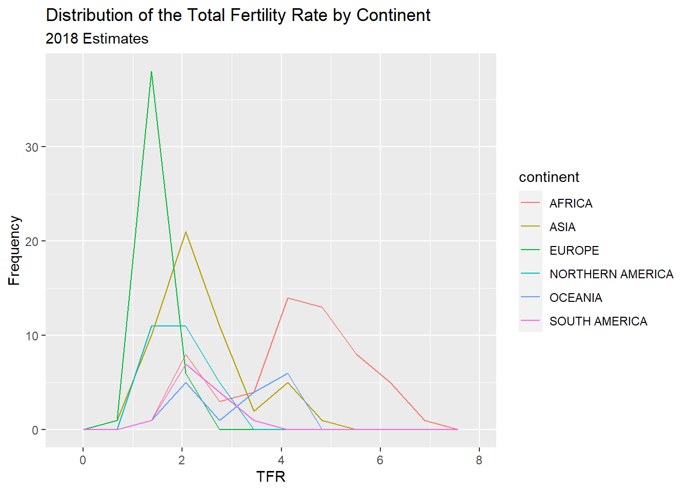
Also, we can plot the relative frequency , or density, instead of the count by including the ..density.. argument in the aesthetic aes().
ggplot(data=prb,mapping = aes(tfr, colour=continent, ..density..))+
geom_freqpoly( bins=10)+
ggtitle(label = "Distribution of the Total Fertility Rate by Continent", subtitle = "2018 Estimates")+
xlab(label = "TFR")+
ylab(label="Frequency")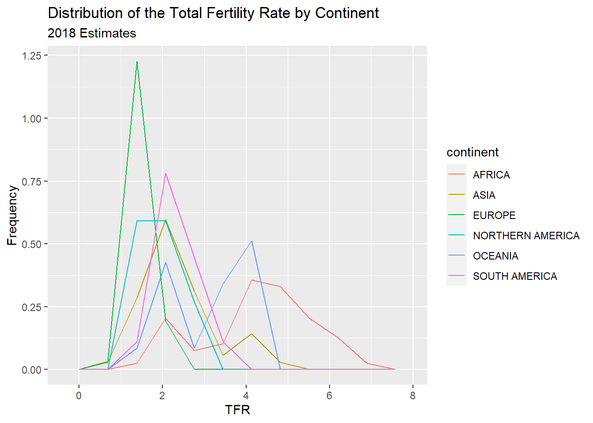
2.0.1.1 Stem and leaf plots/Box and Whisker plots
Another visualization method is the stem and leaf plot, or box and whisker plot. This is useful when you have a continuous variable you want to display the distribution of across levels of a categorical variable. This is basically a graphical display of Tukey’s 5 number summary of data.
ggplot(prb, mapping = aes(x= continent, y =tfr))+
geom_boxplot()+
ggtitle(label = "Distribution of the Total Fertility Rate by Continent", subtitle = "2018 Estimates")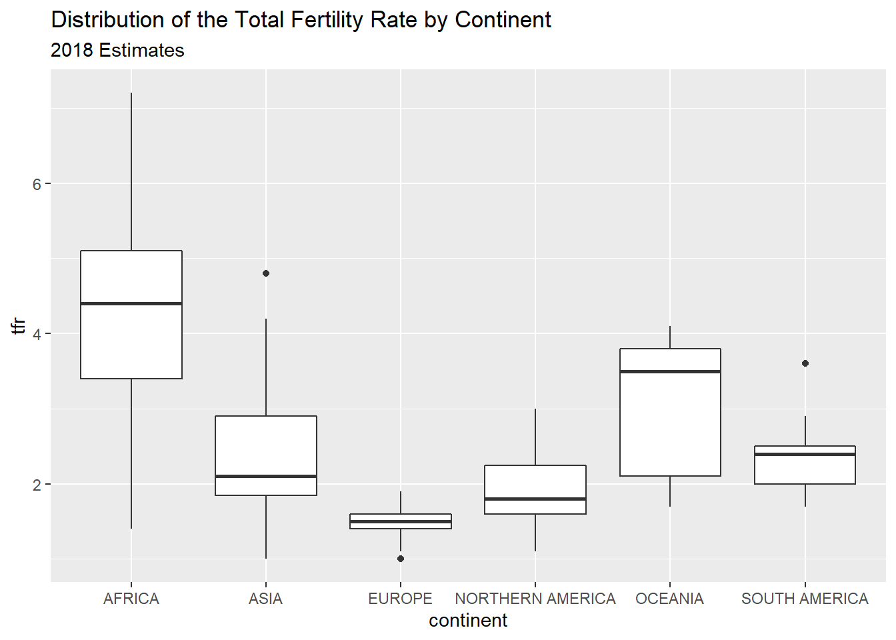
You can flip the axes, by adding coord_flip()
ggplot(prb, mapping = aes(x= continent, y =tfr))+
geom_boxplot()+
ggtitle(label = "Distribution of the Total Fertility Rate by Continent", subtitle = "2018 Estimates")+coord_flip()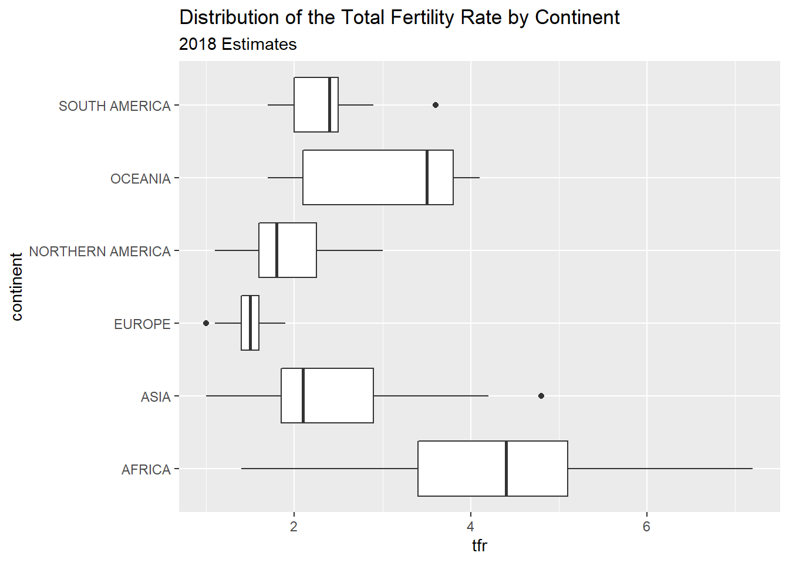
You can also color the boxes by a variable, Here, I will make a new variable that is the combination of the continent variable with the region variable, using the paste() function. It’s useful for combining values of two strings.
##
## Attaching package: 'dplyr'## The following objects are masked from 'package:stats':
##
## filter, lag## The following objects are masked from 'package:base':
##
## intersect, setdiff, setequal, unionprb%>%
mutate(newname = paste(continent, region, sep="-"))%>%
ggplot(aes(x= newname, y =tfr,fill=continent))+
geom_boxplot()+coord_flip()+
ggtitle(label = "Distribution of the Total Fertility Rate by Continent", subtitle = "2018 Estimates")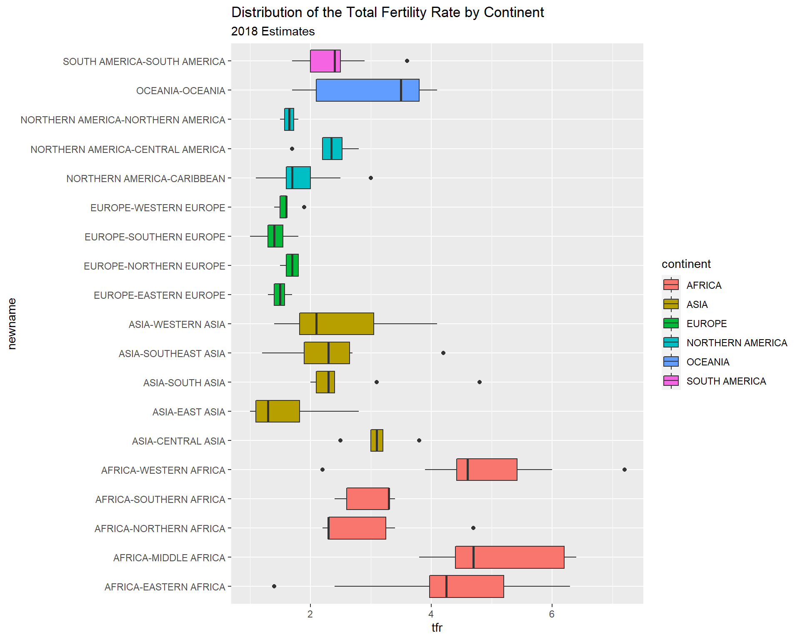
2.0.1.2 X-Y Scatter plots
These are useful for finding relationships among two or more continuous variables. ggplot() can really make these pretty.
Here are a few riffs using the PRB data:
ggplot(data=prb,mapping= aes(x=tfr, y=imr))+
geom_point()+
ggtitle(label = "Relationship between Total Fertility and Infant Mortality", subtitle = "2018 Estimates")+
xlab(label = "TFR")+
ylab(label="IMR")## Warning: Removed 1 rows containing missing values (geom_point).
Now we color varies by continent
ggplot(data=prb,mapping= aes(x=tfr, y=imr, color=continent))+
geom_point()+
ggtitle(label = "Relationship between Total Fertility and Infant Mortality", subtitle = "2018 Estimates")+
xlab(label = "TFR")+
ylab(label="IMR")## Warning: Removed 1 rows containing missing values (geom_point).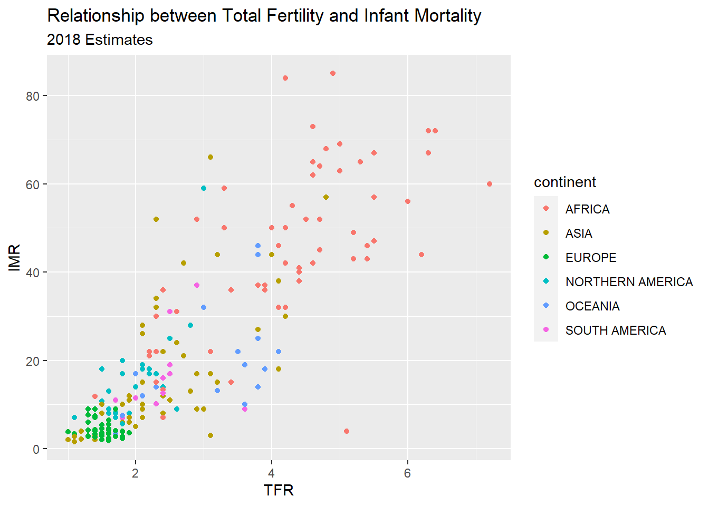
Now we vary the shape of the point by continent
#shape varies by continent
ggplot(data=prb,mapping= aes(x=tfr, y=imr, shape=continent))+
geom_point()+
ggtitle(label = "Relationship between Total Fertility and Infant Mortality", subtitle = "2018 Estimates")+
xlab(label = "TFR")+
ylab(label="IMR")## Warning: Removed 1 rows containing missing values (geom_point).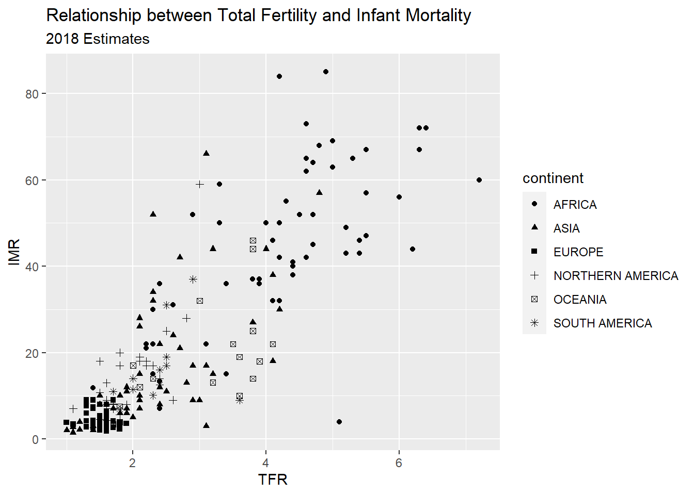
2.0.1.3 Facet plots
Facet plots are nice, if you want to create a plot separately for a series of groups. This allows you to visualize if the relationship is constant across those groups, well at least graphically.
ggplot(data=prb,mapping= aes(x=tfr, y=imr, color=continent))+
geom_point()+
facet_wrap(~continent)+
ggtitle(label = "Relationship between Total Fertility and Infant Mortality", subtitle = "2018 Estimates")+
xlab(label = "TFR")+
ylab(label="IMR")## Warning: Removed 1 rows containing missing values (geom_point).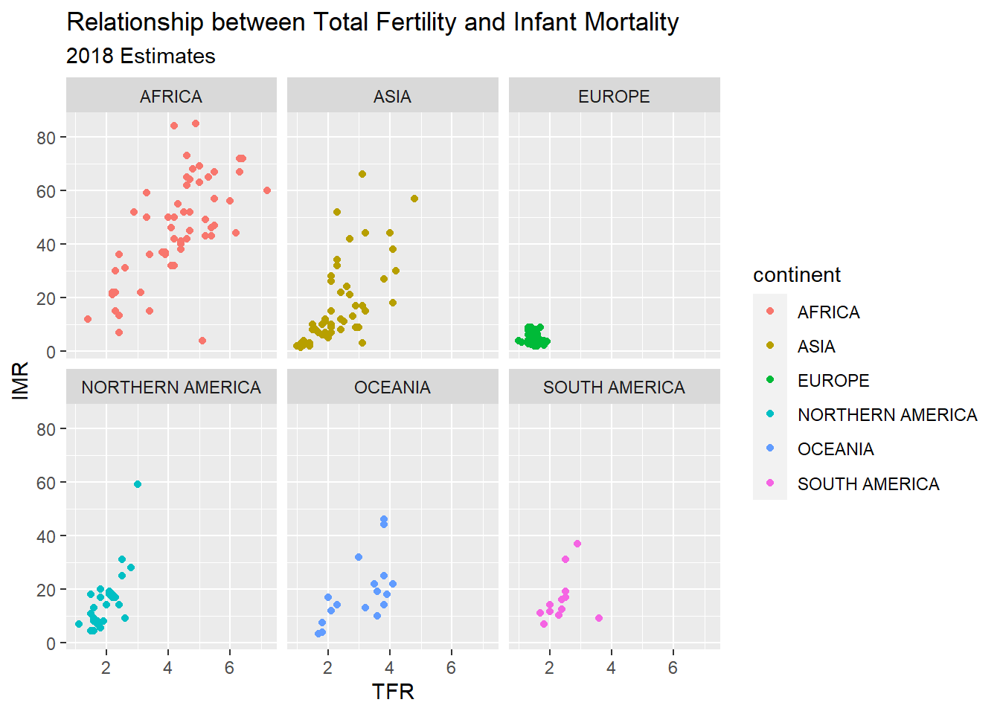
2.0.1.4 Plotting relationships with some line fits
ggplot allows you to make some very nice line-fit plots for scatter plots. While the math behind these lines is not what we are talking about, they do produce a nice graphical summary of the relationships.
ggplot(data=prb,mapping= aes(x=tfr, y=imr))+
geom_point()+
geom_smooth( method = "lm")+
ggtitle(label = "Relationship between Total Fertility and Infant Mortality", subtitle = "2018 Estimates-linear fit")+
xlab(label = "TFR")+
ylab(label="IMR")## `geom_smooth()` using formula 'y ~ x'## Warning: Removed 1 rows containing non-finite values (stat_smooth).## Warning: Removed 1 rows containing missing values (geom_point).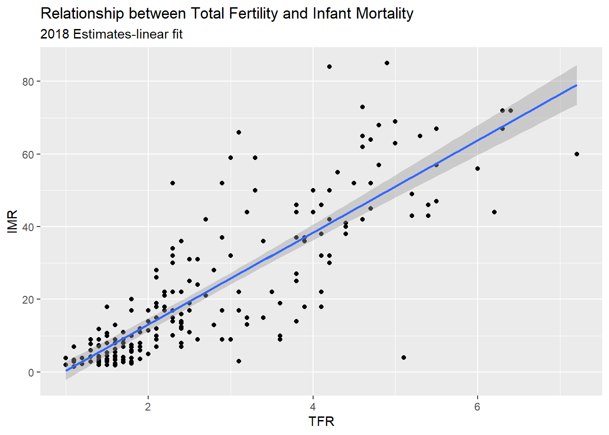
ggplot(data=prb)+
geom_point(mapping= aes(x=tfr, y=imr))+
geom_smooth(mapping= aes(x=tfr, y=imr) , method = "loess")+
ggtitle(label = "Relationship between Total Fertility and Infant Mortality", subtitle = "2018 Estimates")+
xlab(label = "TFR")+
ylab(label="IMR")## `geom_smooth()` using formula 'y ~ x'## Warning: Removed 1 rows containing non-finite values (stat_smooth).
## Warning: Removed 1 rows containing missing values (geom_point).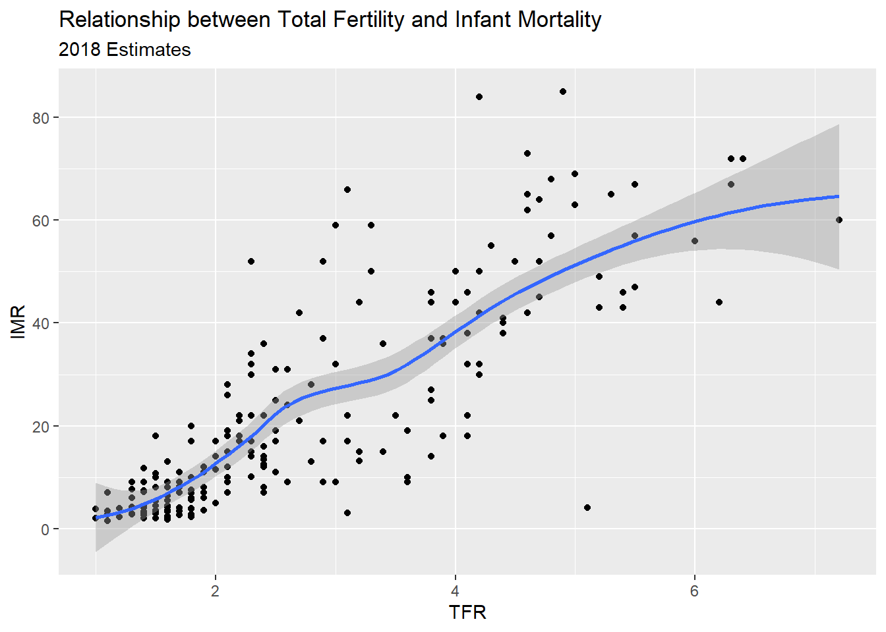
Another example, this time of a bad linear plot!
ggplot(data=prb,mapping= aes(x=tfr, y=pctlt15_2018))+
geom_point()+
geom_smooth( method = "lm")+
ggtitle(label = "Relationship between Total Fertility and Percent under age 15", subtitle = "2018 Estimates-linear fit")+
xlab(label = "Percent under age 15")+
ylab(label="IMR")## `geom_smooth()` using formula 'y ~ x'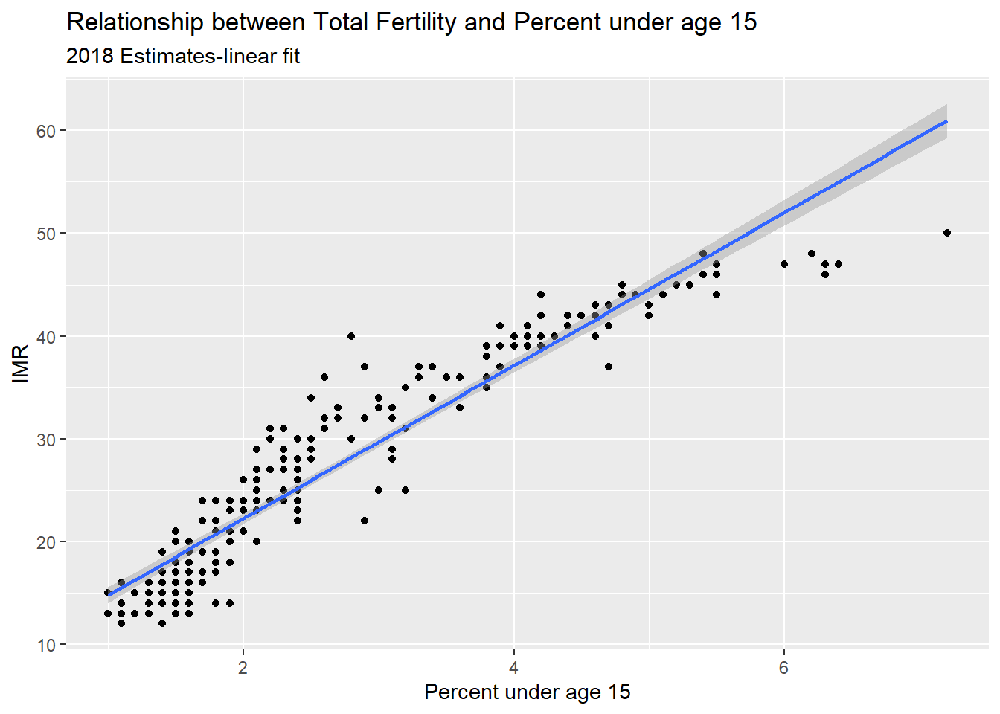
So instead, us a nonlinear fit, a la a loess regression:
ggplot(data=prb, mapping= aes(x=tfr, y=pctlt15_2018))+
geom_point()+
geom_smooth( method = "loess")+
ggtitle(label = "Relationship between Total Fertility and Percent under age 15", subtitle = "2018 Estimates- loess fit")+
xlab(label = "Percent under age 15")+
ylab(label="IMR")## `geom_smooth()` using formula 'y ~ x'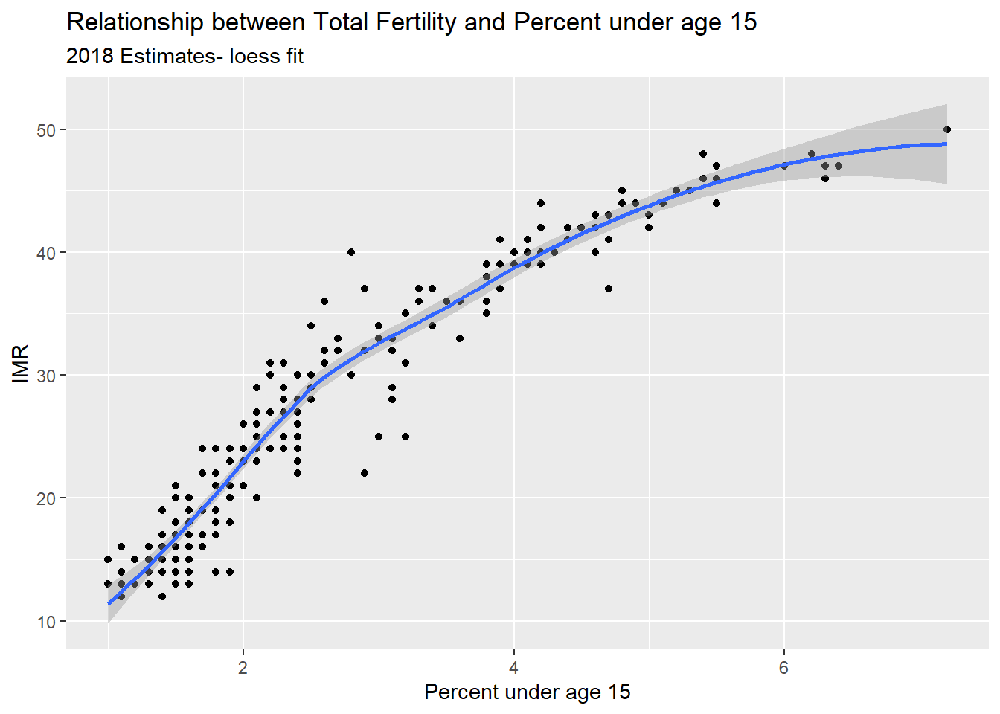
2.0.2 Chapter summary
In this chapter, I have introduced R and Rstudio and some basic uses of the software for accessing data and estimating some summary statistics. The R ecosystem is large and complex, and the goal of this book is to show you, the user, how to use R for analyzing data from demographic data sources. In the chapters that follow, I will show how to use R within two large universes of data, the macro and the micro. The macro level sections will focus on using R on data that come primarily from places - nations, regions, administrative areas. The micro level sections will focus on analyzing complex survey data on individual responses to demographic surveys. The final section will discuss approaches that merge these two levels into a multi-level framework and describe how such models are estimated and applied.